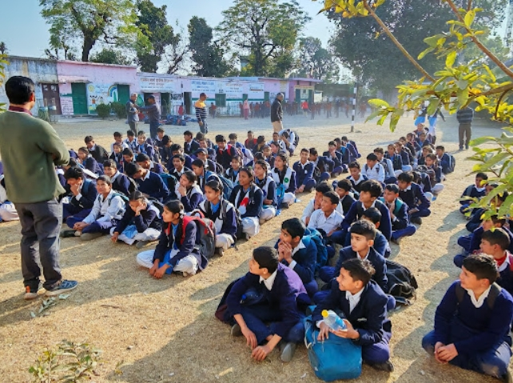
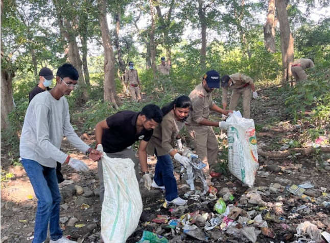
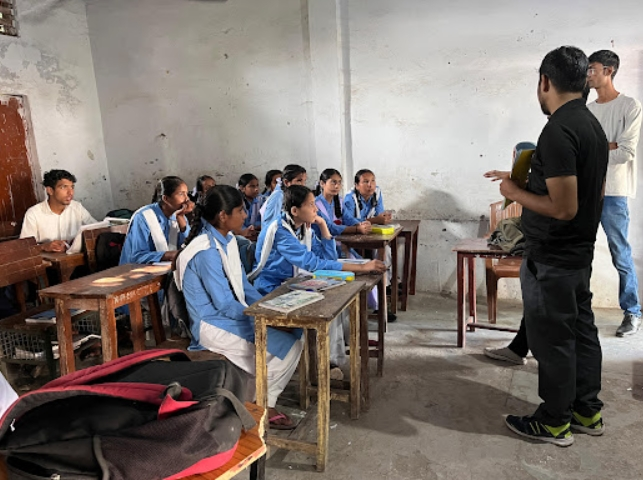

.jpeg)

Introduction
India is home to rich forests, mighty rivers and diverse wildlife; yet it also faces serious environmental challenges like air pollution, water scarcity, deforestation and climate change among them.
In this setting, NGOs play a vital role in raising awareness, promoting sustainable practices and helping build a greener future.
This article explores how NGOs support the environment of India, climate awareness, sustainability education and NGO work in India in meaningful ways.
Why awareness & education matter
A recent survey found that about 92% of Indians say they are concerned about the environment, and two-thirds believe our planet is at risk.
Yet the survey also noted that many people believe they know the correct actions, while in reality some of the most impactful actions are less well known. This gap between concern and correct action is where NGOs step in.
Through sustainability education, NGOs help people understand not only that there is a problem, but what they can do, why it matters, and how to act. In India’s large and diverse setting, this work is vital.
How NGOs create impact: 3 essential roles
- They spread awareness and impact:

Workshops, campaigns, school programs, and community drives taught by NGOs in India are paving the path for basic concepts such as tree planting, recycling & water conservation to take root.
Among these is the Non-Governmental Organization, Him Village e-Prahari that spreads awareness regarding the environment of calm Himalayan regions. Once people understand the problems, they are more apt to get behind them and do something.
- Encouraging sustainable methods and local solutions
However, beyond awareness many NGOs directly assist local communities in sustainable livelihoods or with conservation initiatives.
For example, in certain regions of India NGOs facilitate rain-water harvesting projects, orchard planting, the rehabilitation of forests or renewable energy cooperatives.
Also, the Barefoot College in Rajasthan trains rural women to become solar engineers, lighting up villages sustainably.
These provide awareness and real solutions, not only perceived or propagandistic benefits.
- Advocacy, data and partnerships
NGOs do data collection, work with local governments, have policy influence (in indirect and non-political ways), and reach out to partners to help scale environmental efforts.
Eyeing this devastation, 719 environmental protection organisations are currently (September 2025) working all over India as per reports. It shows the magnitude of NGO action in the Indian environment.
Data & comparisons
- According to a report on India’s non-profit sector, NGOs contribute significantly across fields, including environmental conservation.
- Directories also list hundreds of environmental NGOs in India. For example, NGOBase lists 334 NGOs working specifically on “environment protection” in India.
- The Foundation for Ecological Security (FES) has worked with 41,880 village institutions and restored 12.52 million acres of common land.
- Through this work, FES has impacted 24.8 million people across 14 Indian states.
What Has Changed Because of NGOs?
- Increase in Waste Segregation Awareness

A study by the Center for Science and Environment (CSE) found that in cities where NGOs ran household campaigns, segregated waste collection improved by 35–45% compared to cities without such involvement.This shows that simple climate awareness drives can directly change community behavior.
- Growth of Community Tree-Planting Movements
NGO-led afforestation drives have contributed significantly to India’s green cover.
According to the India State of Forest Report 2021, community-led planting (a large part of which is driven by NGOs) helped India increase forest cover by 1,540 sq km in two years.
This proves that local participation often guided by NGOs has a true impact.
- Better Climate Awareness Among Youth
Programs run by NGOs such as TERI and WWF India have reached over 5 million students with sustainability education modules.
Young people who attend such programs show higher knowledge about climate change, water conservation, and biodiversity (as per WWF’s 2022 Environment Education Report).
Success of NGOs in Various Parts of India
1.Uttarakhand Mountain Ecosystem Conservation

Him Village E-Prahari in Himalayan regions are NGOs that
help protect the fragile ecology of the mountain ranges. They spread awareness on:
- forest fire prevention
- scientific disposal of garbage in hill areas
- protecting local water sources
- reviving traditional knowledge systems
In these areas, tiny awareness programs can avert colossal environmental losses.
2. Maharashtra Management of Rural Water
Dry villages have become water-secure communities through the work of local NGOs who are
implementing watershed projects.
As per the NIRD, that NGOs' working villages have 20-40% higher GW Recharge compared to those of control villages.
3.Northeast India Awareness of Biodiversity
Smaller NGOs working in tribal communities have contributed to its success, helping decrease
hunting and forest fencing.
With their community outreach efforts, we have witnessed a decline of 10-12% in wildlife-related conflict percentage, the report stated quoting Indian Council of Forestry Research and Education (ICFRE).
Increasing Importance of Sustainability Education
India’s environmental challenges like air pollution, water scarcity, heatwaves and waste cannot be solved without informing people. The NGOs make the sustainability education more reachable and acceptable for:
- school children
- young adults
- farmers
- homemakers
- small business owners
They are providing education and climate awareness in ways that are easy to absorb through street plays, posters, nature walks, community meetings and digitally produced videos.
It also explains why NGO work India has been so effective.
A few things NGOs can do more
- Expand school-based climate education.
- Team up with local authorities for maximum impact.
- Train youth as “eco-leaders” in each district.
- Various rural green jobs, composting and solar maintenance among them.
- Support of women’s associations in sustainable agriculture.
- Promote villages as “zero-waste communities”.
As India continues to grow and climate impacts continue to intensify, the role of NGOs will only become more important.
It has been demonstrated that NGOs can raise consciousness and change communities. From encouraging better waste segregation to planting trees and raising climate awareness, their imprint can be seen all over India.
Saving India's environment is not only a responsibility of some NGO or the other, it is about all of us. But with people like them at the helm, others will learn, participate and get engaged in being part of the solution.
NGOs inspire us to imagine a greener future where communities and nature flourish together.
And as the unsung heroes of Green India, NGOs are turning environmental awareness into real change by changing minds and saving nature.